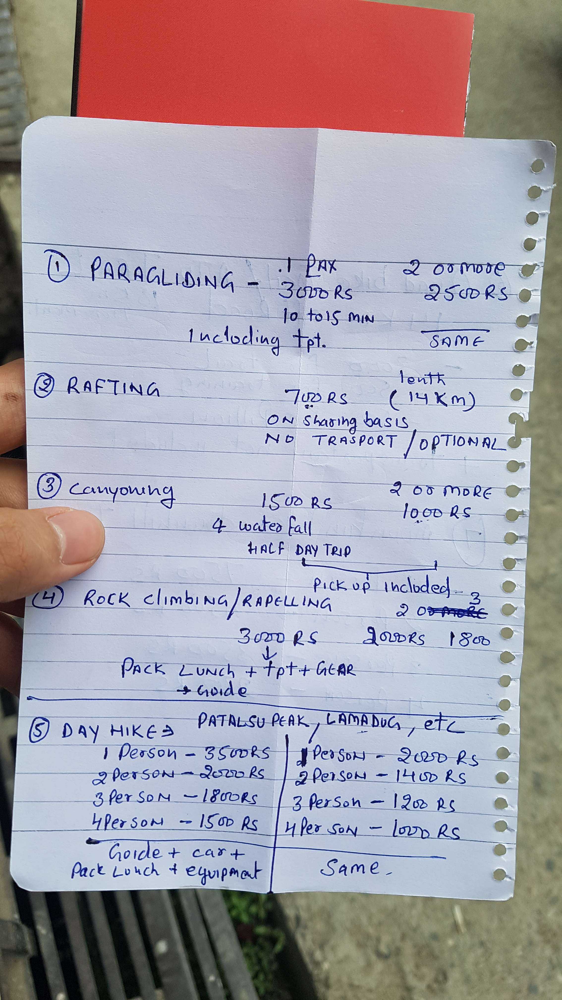

마날리 첫날 오리엔테이션
2017년 05월 08일
여행 D+35, 인도 D+6, 마날리 D+2
준비를 많이 안하고 여행에 오면 얼렁뚱땅 관광지에 도착하고 허겁지겁 검색한뒤 대충 보고 떠나게 되는것 같기도 하다. 그래도 평소에 여행에 관심이 많았으면 어디가 좋다라는 이야기를 많이 들었을텐데 평소에 여행에 그렇게 관심이 많지는 않았었다. 특정 장소에대해 평소에 관심이 많았었고 가고싶었던 장소였다면 그 장소에 도착했을때 보는 느낌이 달랐을 것이다. 평소에 가고싶었던 장소에 고생끝에 도달했을때 느낌과, 그냥 주변사람들이 추천해주는 혹은 인터넷에서 대충 검색해서 들어온 장소의 느낌은 사뭇 다를것 같았다.사실 이 여행중에 만나는 모든 장소는 내게 생소한 장소다. 그래서 앞으로 틈틈히 다음에 갈 여행지에대해서 조사를 충분히하고 장소를 이동하면 좋을것 같다.
어제 밤에 우여곡절 끝에 올드 마날리에 도착하여 그저그런 숙소에 500루피나 내고 묶었다. 그 숙소가 좋았던것은 인터넷속도 하나였다. (인터넷이 빠르긴 진짜 빨랐다.) 어제밤 까지만 해도 그저 그런 느낌이었다. 하지만 아침에 일어나서 식사를 하러 나왔는데 이곳이 너무 좋게 느껴졌다. 전혀 인도 같지 않은 곳이다. 휴양지인것이 다 이유가 있는듯 하다. 식사를 하러 잠깐 동네를 거닐기만 했는데도 너무 좋았다. 설산과 시원한 강, 삼나무 숲 속에 자리잡고있는 올드 마날리가 점점 마음에 들기 시작했다.
이곳은 밥값이 약간 비싸다. 숙소는 어떻게든 하루 300~500루피 사이로 (한화 6000원~만원) 구해볼 수 있겠지만 밥값은 기본 300루피 정도 하는것 같다. 이번에는 사람들이 추천하는 식당을 모조리 저장해놓고 매번 다른 식당에 가기로 했다. 오늘 아침은 블로그에서본 blue elepent 식당인데 막상 도착해보니 문을 열지 않았었다. 그래서 그냥 숙소 근처 강이 보이는 곳에 자리잡고 식사를 했다. 이곳에도 역시나 한국인 식당이 많이 있다. 그중 하나는 한국인이 직접 운영하는 yun cafe다. 인터넷에서 사장님 카톡 아이디를 알아낸 뒤 연락하고 점심에 윤카페에 가기로 했다. 이곳 마날리에 대한 정보를 얻기 위해서였다.
식사를 마치고 옮길 방을 구하러 돌아다녔다. 아무리 생각해도 어제 묶은 방은 너무 구렸다. 올드마날리 왼쪽 길로 쭉 올라가면 가게와 게스트하우스가 엄청 많았는데 아무래도 이곳이 메인 거리인것 같다. 이곳저곳 가격을 물어봤는데 대부분 500루피다. 근데 방 상태는 훨씬 더 훌륭하다. 전망도 좋고 방고 깨끗하고.. 같은 값이면 이런데 묶는게 훨씬 낫지. 한 대 여섯군데를 돌아다닌 끝에 400루피짜리 방 두군데를 찾았다. 마지막에 찾은 숙소는 orchard house인데 400루피방이 있었다. 그러나 화장실이 포함되지 않은 방이었다. 그래도 다른곳과 다르게 전망이 좋았다. 그래서 오늘 이방에서 묶기로 했다. 일단 짐을 챙겨왔는데 아직 방에있던 사람이 체크아웃을 하지 않아서 기다려야 했다. 점심을 먹고 돌아오기로 했다.
윤까페에 왔다. 역시 몇몇 한국인들이 보였다. 나는 도착해서 바로 일기를 작성했다. 일기를 이렇게 틈틈히 적어야 밀리지 않고 쓸 수 있다. 일기를쓰느데 하루 1~2시간씩 사용하는것 같다. 뭐가 이리 오래걸리는지 모르겠다. 블로그 업로드는 아직 생각도 못했다. 여기 마날리에서 언제한번 쭉 올려야겠다. 윤까페에서 사장님과의 대화를 기대했지만 그렇지 못했다. 닭도리탕 백반을 먹었는데 매웠지만 맛있었다. 대충 일기를 마무리하고 뒷쪽에 앉아있던 한국인 커플에게 말을걸었다. 마날리에서 뭘 하면 좋느냐고, 아쉽게도 그들은 마날리에서 일주일동안 있었는데 뭘 잘못 먹었는지 몸이 좋지 않아서 아무것도 하지 못했다고 한다. 그래도 다음 여행지인 맥그로드간즈에대한 정보를 얻을 수 있었다. 그들은 2달 인도 여행중 맥그로드 간즈가 가장 좋았다고 한다. 이런식으로 틈틈히 다음 여행지에대한 정보를 수집해야 겠다.
이번 마날리부터 빈둥빈둥 시간 버리지 말고 최대한 열심히 돌아다니면서 보고 경험하기로 했다. 그래서 숙소에 돌아가기전에 근처에 있던 마누템플에도 다녀왔다. 숙소에 왔는데 2시가 넘었다. 그런데도 아직 그 400짜리방은 체크아웃 되어있지 않았다. 숙소 주인에게 말했는데 다른방에 묶어야할것 같다고 했다. 그래서 어제 봤던 도미토리방 500짜리로 묶으면 어떻냐고 했다. 이때 나는 이렇게 말했다. 나는 여기 400짜리 방에 묶으로 왔다. 그렇기 때문에 저방에서 묶는대신 방값을 할인 해달라. 그랬더니 400에 해준다고 한다. 결국 이집에서 제일 큰 방을 400에 혼자 묶게 되었다. 만세!
 오늘 내가 묶은 숙소 내부.
오늘 내가 묶은 숙소 내부.
마날리 에서는 수많은 액티비티를 즐길 수 있다고 한다. 그래서 상점 주변에도 투어 회사가 무척 많다. 오늘은 그냥 하루정도 쉬면서 마날리를 둘러보고 조사를 하기로 했다. 첫번째로 액티비티 가격을 조사하기로 했다. 처음 보이는 투어회사에 들어갔는데 주인이 엄청 친절하고 꼼꼼하게 가격과 정보를 알려줬다. 거기서 투어상품을 구매하지 않는데도 말이다. 약 7가지 액티비티 종류와 패키징 가격에 대해서 종이에 직접 꼼꼼히 적어주는데 정말 친절했다. 가격은 사람이 많을 수록 싸지는데 그래서 동행이 있으면 더 저렴하게 구할 수 있나보다. 일단 또 혼자온 여행자가 등록해놓았으면 같이 하기로 하고 이회사에 캐널링과 마운틴 클라이밍을 예약했다.
 주인아저씨가 친절하게 적어준 상품 정보. 대략 이정도 가격인데 패러글라이딩과 레프팅 캐널링, 마운틴 클라이밍은 마날리에서 꼭 해보고 싶다. 하루에 하나씩?
어제부터 장에 문제가 왔는지 심각한 변비에 걸려버렸다. 물갈이 설사가 끝나자마자 인생 최악의 변비에 걸려버렸다. (아무리 힘을 줘도 변이 출력되지 않음) 어메이징 인디아다. 별의별일을 다 당한다. 인터넷 검색끝에 관장약을 구매하기로 했다. 근데 인도에서 관장약을 도데체 어떻게 구하나? 말실수 했다가 제사제를 받아서 변비가 더 심해지면 어쩌나?
약국은 이곳 올드마날리에 없어서 어제 버스로 도착했던 뉴마날리로 가야한다. 가기전에 화장실에 한번 더 들렀다. 내부의 압력이 커서 그랬는지 약간의 간극으로 소량의 유체가 방출되었다. 끝은 막혀있고 내부는 설사고 장상태가 어메이징하다. 아직도 말단은 단단히 막혀있는듯 했지만 이런식으로 계속 시도하다보면 언젠간 해결되지 않을까 하는 믿음으로 약을 구매하지 않고 몸이 해결하도록 놔두기로 했다.
뉴 마날리로 가는 길에 삼나무 숲을 가로질러 갔다. 이 숲은 오늘까지 내가 경험한 마날리중 최고였다. 사람도 별로 없는 높고 거대한 나무 숲을 거니는데 갑자기 공룡이 사는 시대에 뚝 떨어진 느낌을 받았다. 숲은 항상 신비로움을 간직하고 있다. 인간의 발길이 닿지 못하는 깊은 숲일수록 더 깊은 매력이 있는것 같다. 집앞에 이런곳이 있었다면 나는 매일매일 이곳에 왔을것 같다. 다음번에는 아침산책으로 도시락을 싸서 꼭 다시 들러야겠다.
오늘 만난 최고의 장소 삼나무 숲! 잊지못할 숲이다.
다시 도착한 뉴마닐리는 역시 사람이 엄청나게 많았다. 삼나무숲에는 사람이 거의 없었는데 인도인들은 자연에는 별 관심이 없나보다. (그래서 쓰레기를 그렇게 막 버리는지?) 마치 명동을 떠올리게 했다. 한국이야 땅덩어리가 좁은데 비해 갈곳이 별로 없으니 그렇게 사람이 몰리는것이 이해가 가면서도 인도는 이렇게 땅덩어리가 넓은데 어떻게 사람으로 바글바글한지 알다가도 모를일이다.
바라나시에서 사기 당했던 내 유심카드를 airtel 고객센터를 방문해서 해결하기로 했다. 지도에는 없어서 물어물어 도착한 airtel 고객센터는 버젓히 간판도 있었고 깔끔한 인테리어를 갖추고 있었다. 결국 이곳에서도 내가 구매한 유심카드는 동작시키지 못했다. 직원 할아버지가 아무래도 바라나시에서 구매했기 때문에 거기서 초기 설정을 하고 왔어야했다고 한다. 400루피나 주고 구매했는데! 고민했다. 그냥 와이파이만 이용해서 돌아다닐지, 아니면 심카드를 다시 구매할지. 그런데 앞으로 인도에서 장기 이동이 2번이나 남았는데 그 긴 시간을 인터넷없이 가는것이 어려워보였다. 지도 정보도 이용해야하고 정류장에서 필요한 정보도 검색해야하기 때문에 숙소에서만 인터넷을 사용하기에는 여행에 제약이 많았다. 그래서 제일 저렴한 심카드가 얼마인지 물어봤는데 200루피라고 한다. 근데 2G사용할 수 있다. 바라나시 조그만 가게에서 구매한 심카드는 400루피에 600Mb밖에 못쓴다고 했는데 역시 사기꾼들!! 결국 나는 600루피에 유심카드를 구매한 꼴이 되었다. 그래도 유심카드는 사용가치가 무척 높기 때문에 구매해도 된다. 내일 오후 8시가되면 activate시킬수가 있다. 기대된다!
그 뒤 돌아다니면서 뉴마날리 거리를 구경했다. 사람구경도 할겸. 갑자기 누군가 뒤에서 나를 불렀다. 어제 버스에서 만났던 그 가족이었다. 어찌나 반갑던지! 수 많은 인도인 틈에서 나만 동떨어진 인간으로 느껴졌었는데 이 가족과 대화하고 있는 내 모습을 보니 인도인들 속으로 깊이 들어간 여행자가 된것같았다. 이 들은 내일 다시 돌아간다고 한다. 서로 페이스북도 친구 맺고 연락처도 받았다. 나중에 본인 집에 놀러오라고 한다. 지역이름은 Kanyakumari 이고 인도에서 가장 남쪽에 있다고 한다. 인도에서 가장 남쪽에 있는 마을이라 가볼만한 가치가 있다고 느껴졌다. 나중에 기회가 되면 겨울에 인도에 다시 올것이다. 꼭 . 그때 찾아가고 싶다. 이렇게 하나한씩 해외에 친구들을 만들면 추후에 있을 여행이 더 즐거워질것 같다.
오늘 저녁은 뉴마날리에 위치한 중국 음식점이 chopsticks라는 맛집에 가기로 했다. 거기에 모모가 있는데(한국의 만두와 똑같음) 개 맛있다고 한다. 모모만 시켰는데 가격이 150루피로 무척 저렴했다. 한씨 식사로 약간 부족하지만 이따가 과일을 사갈 것이기때문에 괜찮았다. 여기서 먹었던 치킨 모모는 정말 맛있었다. 인도에서 먹었던 것중에 손꼽을 수 있을정도다. 걷은 바삭하고 속이 치킨 고기로 되어있는데 육즙이 기가 막혔다. 음식을 주면서 포크와 나이프만 주길래 가게이름이 찹스틱인데 젓가락을 줘야지 하면서 젓가락을 달라고 했다. 옆에있는 사람들 모두 포크만 사용하는데 나는 가게이름에 걸 맞게 젓가락을 사용하고 있으니 왠지 우쭐한 느낌이 들었다. 뉴마날리 음식점 찹스틱의 모모 완전 강추!
돌아가는 길에 망고를 구매하고 릭샤를 타기로 했다. 아직 무릎상태가 좋지 못하기 때문에 너무 많이 걸으면 악영향이 있을것 같아서다. 100루피로 올드마날리 까지 가기로 합의하고 출발했다. 나는 중간에 올드마날리 다리를 지나서 왼쪽으로 더 올라가야한다고 말해줬다. 이거가지고 도착해서 돈 더달라고 하면 어쩌나 긴장하면서 갔다. 분명 뭔가 있을것이다라고 생각했다. 이렇게 순조로울리가 없다. 예상과는 다르게 도착해서 100을 주니 고맙다고하고 끝났다. 처음으로 릭샤꾼과 갈등이 없었다. 더 의아스러웠다.
돌아와서 샤워하고 빨래하는데 방이 너무 좋아서 아무런 문제가 없었다. 모든 일과를 마치고 아까 구매한 망고 1kg을 까먹기 시작했다. 나는 4년전 남미 마추믹추 트레킹중 아마 망고 시즌이었던것 같다. 가는 길마다 수 많은 망고나무를 만났는데, 그 아래 떨어진 망고들을 계속 주워먹었었다. 그 때 평생 먹을 망고는 다 먹고 온것 같았다. 그 뒤로 4년동안 한국에서 망고를 사 먹어본 기억이 없다. 공짜로 배터지게 먹었던 망고를 한국에서 초 비싸게 먹어야한다는게 탐탁치 못해서 였을 것이다.
4년뒤 이곳 네팔과 인도에왔는데 다시 비슷한 경험을 하고 있다. 여긴 망고가 엄청나게 싸다. 네팔에서는 트레킹을 마치고 1주일동안 포카라에 있을때 매일매일 망고를 1kg씩 먹었다. 가격은 120네팔 루피로 한국돈으로 1200원 정도한다..! 그리고 오늘 구매한 망고는 겉이 초록색과 빨간색인 애플 망고다. 가격은 1kg에 80인도루피로 한국돈으로 1600원 정도다! 천국이 존재 한다면 바로 여기가 천국이다!!
한국에서는 망고를 그 벌집모양으로 예쁘게 만들어 먹는데, 그것은 적절치 못한 방법이다. 망고를 제대로 먹으러면 그냥 껍질을 칼로 벗겨내고 통째로 먹어야한다. 오늘 먹은 애플 망고는 과즙이 팔뚝으로 뚝뚝 떨어질 정도로 흘렀다. 매일매일 일과를 마치고 망고를 먹는 시간이 너무 행복하다. 4년전과 같이 앞으로 한국에 돌아간 뒤 4년동안은 또 망고 먹을일이 없을 것 같다.